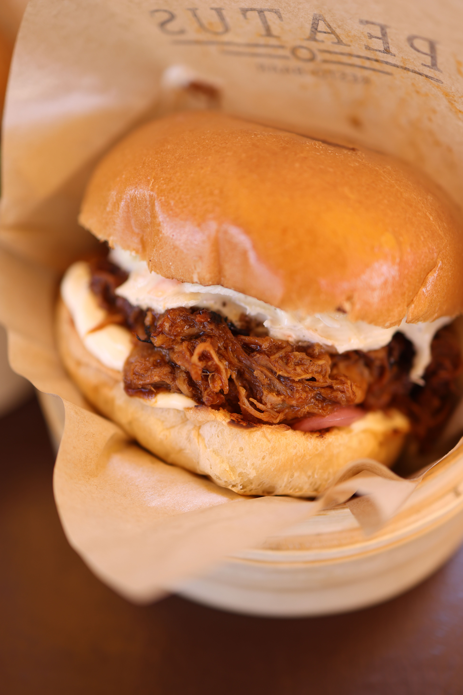
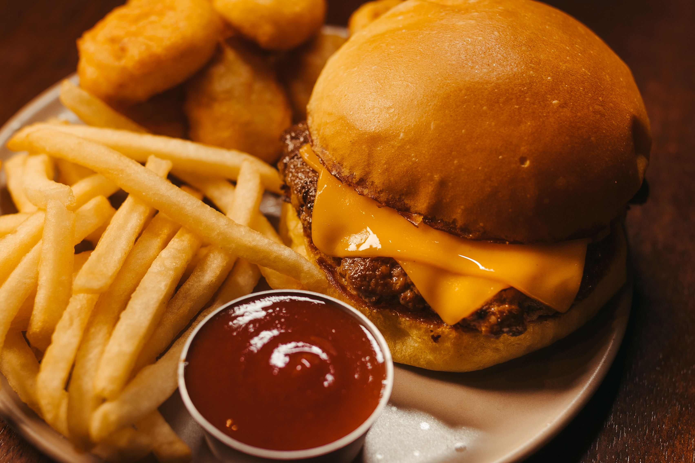
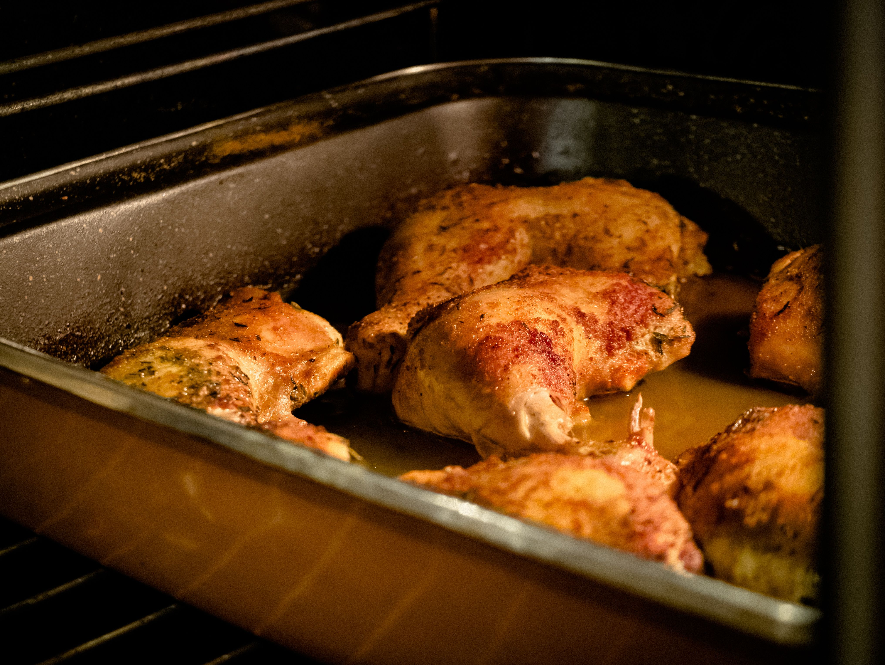

The Ballston and Virginia Square neighborhoods are among the most walkable dining scenes in the D.C. area, with everything from wood-fired barbecue to charcoal-broiled Peruvian chicken a short stroll from the Metro. This guide rounds up the spots worth the trip!
Suggested Restaurants

Rocklands Barbeque & Grilling Company
Barbeque · $$
Ballston — 5 min walk from Ballston Metro
Famous for its wood-smoked baby-back ribs and the Rocklands Pearl — mac and cheese, baked beans, and chopped pork piled high in a bowl.

Big Buns Ballston
American Burgers · $$
Ballston — 3 min walk from Ballston Metro
Known for its wood-smoked baby-back ribs and the Rocklands Pearl — mac and cheese, baked beans, and chopped pork piled high in a bowl.

El Pollo Rico
Peruvian · $$
Virginia Square — 8 min walk from Virginia Square Metro
Named to the 40 Essential Dishes of D.C. by the Washington Post. Famous for its charcoal-broiled Peruvian chicken and fiery green chile dipping sauce.

Carbonara
Italian · $$$
Virginia Square — 6 min walk from Virginia Square Metro
Named Best Italian in NoVA 2025. Famous for its flaming Parmesan-wheel carbonara and vodka sauce chicken parm.
Quarter Market, Ballston's Food Hall
Spanning 25,000 square feet inside Ballston Quarter, Quarter Market is Arlington's largest food hall. Opened in 2019, it brings together a dozen+ locally-owned concepts under one indoor/outdoor roof, centered around a public plaza with communal seating.
Highlights include:
- Hot Lola's - Spicy fried chicken sandwiches and tenders
- Sloppy Mama's BBQ - Brisket, pulled pork, and Texas-style classics
- Maizal - Latin street food and tacos
- Ice Cream Jubilee - Award-winning small-batch ice cream
- Turu's by Timber - Wood-fired artisan pizza
- Bollywood Bistro - Fast-casual Indian dishes
- Jinya Ramen Bar - Non-traditional ramen and steamed buns
- The Local Oyster - Fresh Maryland crab and oysters
Perfect for groups: everyone can pick a different vendor and eat together at shared tables. Quarter Market Directions →
Dining by Neighborhood
Each of these areas has its own character and is a short walk from a Metro station:
- Ballston - The densest restaurant corridor in Arlington. Vietnamese, Italian, Peruvian, Japanese BBQ, and more within a few blocks. Quarter Market adds a food-hall option right at the Metro entrance.
- Virginia Square - Home to Carbonara, El Pollo Rico, and a growing mix of casual and upscale spots. Slightly less crowded than Ballston but just as walkable.
- Clarendon - Arlington's original "downtown." High-energy strip along Wilson Blvd with late-night options, pubs, and fine dining. Four Sisters Grill (Vietnamese) and Tiger Dumplings are local standouts.
- Pentagon City - The Fashion Centre mall anchors the area, with a mix of chain and local restaurants. Convenient for airport travelers.
- Crossroads - Up-and-coming corridor known for breweries, food trucks, and a younger, creative crowd.
- Courthouse - A quieter, village-like neighborhood with gems like Sawatdee Thai, Tika Masala Street Food, and Mejana.
Budget Tips
- $ (under $15): Quarter Market vendors, El Pollo Rico, Hawkers, food trucks at Crossroads
- $$ ($15–$30): Rocklands, Big Buns, Four Sisters Grill, Gyu San Japanese BBQ
- $$$ ($30+): Carbonara, AMBAR, The Commentary, Tiger Dumplings
Getting There
Most of these restaurants are within walking distance of a Metro station. See our Getting Around page for station details.